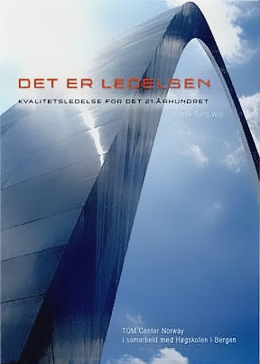

Norsk
Lærende organisasjoner
Ressurser til boka, kapittel for kapittel: Del I Fortid, Del II Nåtid, Del III Framtid.
Til ressurssideneRessurser til boka, kapittel for kapittel: Del I Fortid, Del II Nåtid, Del III Framtid.
Til ressurssidene
Del I Lederskap og kultur: forelesningsnotater, maler og kursmateriell.
Til ressurssidene
Mike Rother, author of Toyota Kata, at the Lean Summit 2012.
RSA Animate of a talk by Sir Ken Robinson.
Robert Lloyd, PhD, from the IHI Open School course QI101.
Robert Lloyd, PhD, from the IHI Open School course QI101.
Lecture notes, templates and articles from our courses and books – free to download.
Kursmateriell på norsk fra programmet «Lean ledelse for lærende organisasjoner».
Articles and templates that accompany the book.
Arbeidsdokumenter og maler fra boka.
Articles and reports by other authors that the book pages refer to.
Tell us where you are today, and we will suggest the next step for your team.
or contact us directly: gabi@learnorg.global · +47 48 28 70 00